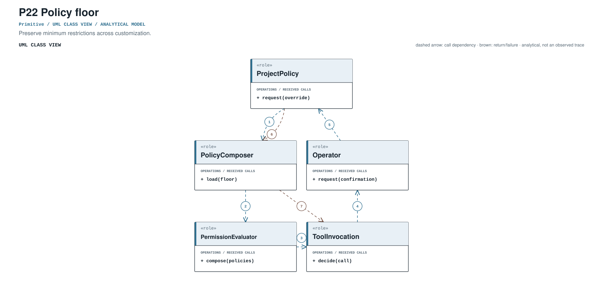
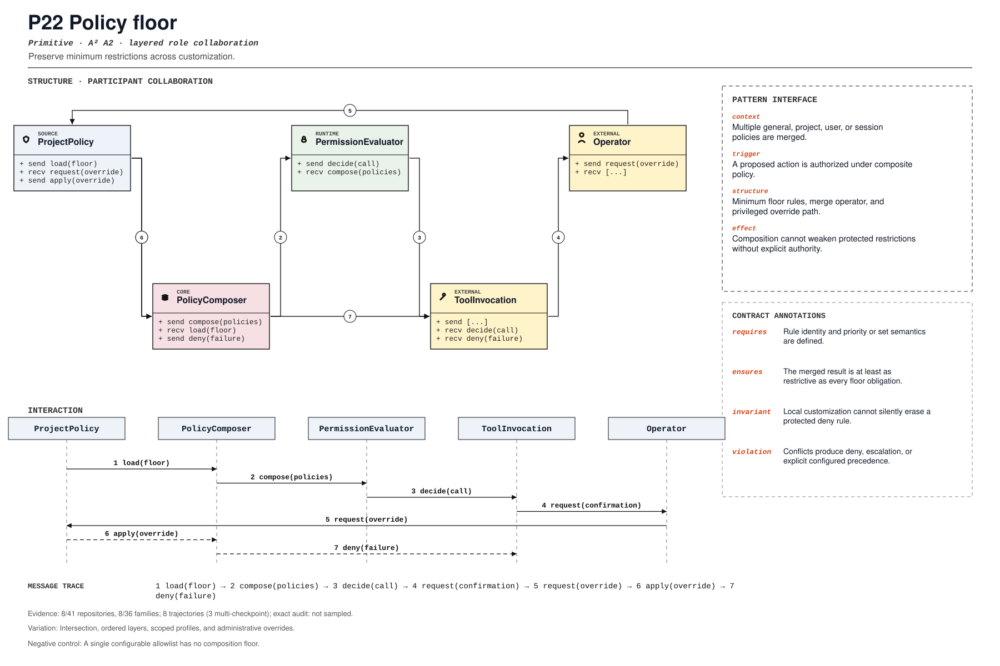

PROMPT SKETCH
Compose policy layers by intersection, not by last-writer-wins. The merged decision must be at least as restrictive as every floor obligation, and the effective rule must be attributable.Preserve minimum restrictions across customization.
policy_compositionRECORD STATUSCandidate · v0.1.0The proposed contract drawn as participant roles, received calls, and numbered dependencies.

The same roles and calls as a class collaboration and a numbered message sequence.

Where the mechanism applies. All four dimensions belong to the proposed match, not just its vocabulary.
The obligation that clients, operators, and auditors should be able to rely on.
A single configurable allowlist has no composition floor.
The hot spot is admitted only where the protected semantics survive.
Intersection, ordered layers, scoped profiles, and administrative overrides.
Test widening, conflicting rules, missing policy, and privileged override.
Did policy composition become monotonic with explicit exceptions?
An illustrative prompt and a small design sketch for the proposed contract. Names and APIs are invented; this is not a repository excerpt.
Compose policy layers by intersection, not by last-writer-wins. The merged decision must be at least as restrictive as every floor obligation, and the effective rule must be attributable.def merge(layers):
decisions = [layer.evaluate(request) for layer in layers]
denied = [decision for decision in decisions if decision.denied]
if denied:
return Decision.deny(denied, source=denied[0].source)
return Decision.allow(
max(decisions, key=lambda decision: decision.restrictiveness)
)Illustrative design sketch. A permissive override may add capability, but it must not erase a floor. This example is a teaching aid, not implementation evidence or a conformance claim.
The frozen rule that retrieves this record, the canonical source exemplar, and the control that should stay unmatched.
policy_composition(?i)\b(?:policy[_-]?floor|minimum[_-]?policy|deny[_-]?rules?|policy[_-]?composition)\bFrozen expression, v0.1.0. A match is a retrieval cue, not a confirmed implementation.packages/core/src/permission.ts:20Support: packages/core/test/permission.test.ts:1Scope-anchored review. pohe-agent analyze <repo> --pattern P22 anchors the cue to its enclosing declaration and checks a separate operational signature for all four pointcut dimensions. Missing roles and negative-control risks remain visible; a structural match is not E2/E3. Calibration report ↗
Up to five public files retrieved by the frozen cue and pinned to the audited commit. A match is a place to inspect, not a confirmed implementation.
packages/core/src/permission.ts:20CANONICAL SOURCE02openai/openai-agents-pythonsrc/agents/sandbox/sandboxes/unix_local.py:982RETRIEVAL CUE03QwenLM/qwen-codepackages/core/src/config/config.ts:8672RETRIEVAL CUE04affaan-m/ECCdocs/ECC-PRO-SECURITY-ROADMAP.md:250RETRIEVAL CUE05deepseek-ai/deepseek-harnessdocs/upgrade-guide/v0.2.1-rc.2/headless-policy-composition/guide.i18n.yaml:4RETRIEVAL CUEEach layer answers a different question. Do not substitute retrieval for review.
A concrete source anchor is available for this proposed record. It is one exemplar, not evidence that all repositories—or every contract field—conform.
Review boundary: this candidate and its specification come from an AI-assisted study. Independent human validation remains open.
22.2% of repository families in the frozen panel have at least one current cue, historical cue, or canonical source layer. This is not confirmed prevalence.
Current lexical-cue repositories: 7 / 41885df74024b6packages/core/src/permission.ts:20packages/core/test/permission.test.ts:1Missing agent permissions resolve to deny-all, then merge with session policy.
(?i)\b(?:policy[_-]?floor|minimum[_-]?policy|deny[_-]?rules?|policy[_-]?composition)\bThis expression is a discovery instrument only. A match is a retrieval cue—not a confirmed implementation, pointcut match, or contract proof.